Next: Stopping Criterion and System Up: The ICSI Broadcast News Previous: Clusters Initialization and Acoustic Contents
Given M clusters with their corresponding models, the matrix of distances between every cluster pair is created and the closest pair is merged if it is determined that both clusters contain data from the same speaker. In order to obtain a measure of similarity between two clusters modeled by a GMM a modified version of the Bayesian Information Criterion (BIC) is used, as introduced by Ajmera in Ajmera, McCowan and Bourlard (2004) and Ajmera and Wooters (2003). As explained in the state of the art chapter, the BIC value quantifies the appropriateness of a model given the data. It is a likelihood-based metric that introduces a penalty term (in the standard formulation) to penalize models by their complexity.
Given two clusters 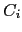 and 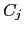 composed of  and
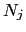 acoustic frames respectively, they are modeled with two
GMM models
and
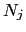 acoustic frames respectively, they are modeled with two
GMM models
 and
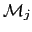. The data used
to train each of the models is the union of the data belonging to
each one of the segments labelled as belonging to cluster 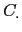.
In the same manner a third model
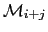 is trained
with
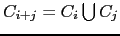.
and
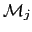. The data used
to train each of the models is the union of the data belonging to
each one of the segments labelled as belonging to cluster 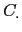.
In the same manner a third model
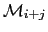 is trained
with
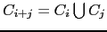.
In the standard BIC implementation to compare two clusters
(Shaobing Chen and Gopalakrishnan, 1998) the penalty term adds a factor  that is
used to determine the effect of the penalty on the likelihood. The
equation of the standard
that is
used to determine the effect of the penalty on the likelihood. The
equation of the standard  BIC for GMM models is
BIC for GMM models is
| 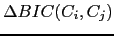 | 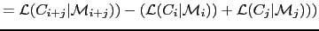 | ||
| 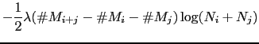 | (3.1) |
where is the number of free parameters to be estimated for each of the models, i.e. relative to the topology and complexity of the model.
It is considered that two clusters belong to the same speaker if
they have a positive  BIC value. Such value is affected by
the penalty term (including the
BIC value. Such value is affected by
the penalty term (including the  , which acts as a
threshold determining which clusters to merge and which not to).
The penalty term also modifies the order in which the cluster
pairs are merged in an agglomerative clustering system, as each
pair will have a different number of total frames and/or models
complexities, which will cause the penalty term to be different.
In systems based on
, which acts as a
threshold determining which clusters to merge and which not to).
The penalty term also modifies the order in which the cluster
pairs are merged in an agglomerative clustering system, as each
pair will have a different number of total frames and/or models
complexities, which will cause the penalty term to be different.
In systems based on  BIC this penalty term (
BIC this penalty term ( ) is
usually tuned based on development data and it always takes values
greater than 0. In some cases two different values are defined,
one for the merging criterion and the other one for the stopping
criterion.
) is
usually tuned based on development data and it always takes values
greater than 0. In some cases two different values are defined,
one for the merging criterion and the other one for the stopping
criterion.
When training models to be used in  BIC, these need to be
trained using an ML approach, but there is no constraint in the
kind of model to use. Ajmera's modification to the traditional BIC
formula comes with the inclusion of a constraint to the combined
model 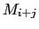:
BIC, these need to be
trained using an ML approach, but there is no constraint in the
kind of model to use. Ajmera's modification to the traditional BIC
formula comes with the inclusion of a constraint to the combined
model 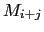:
This is an easy to follow rule as model is normally built exclusively for the comparison.
By Applying this rule to the  BIC formula one avoids having
to decide on a particular
BIC formula one avoids having
to decide on a particular  parameter and therefore the
real threshold which is applied to consider if two clusters are
from the same speaker becomes 0. The formula of the modified-BIC
becomes equivalent to the GLR, but with the condition that
3.2 applies.
parameter and therefore the
real threshold which is applied to consider if two clusters are
from the same speaker becomes 0. The formula of the modified-BIC
becomes equivalent to the GLR, but with the condition that
3.2 applies.
The lack of an extra tuning parameter makes the system more robust to changes in the data to be processed, although, as the BIC formula is just an approximation of the Bayesian Factor (BF) formulation, sometimes the robustness increase comes with a small detriment on performance.
In the broadcast news system that has been described, the model
is generated directly from the two individual models  and by pooling all the Gaussian mixtures together. Then the
data belonging to both parent models is used to train the new
model via ML. Training is always performed using an Expectation
Maximization (EM-ML) algorithm and performing 5 iterations on the
data.
and by pooling all the Gaussian mixtures together. Then the
data belonging to both parent models is used to train the new
model via ML. Training is always performed using an Expectation
Maximization (EM-ML) algorithm and performing 5 iterations on the
data.
Once the  BIC metric between all possible cluster pairs has
been computed, it searches for the biggest value and if
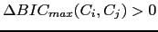 the two clusters are merged into a
single cluster. In this case, the merged cluster is created in the
same way as is created, although it is not a
requirement. The total complexity of the system remains intact
through the merge as the number of Gaussian mixtures representing
the data is the same, clustered in M-1 clusters.
BIC metric between all possible cluster pairs has
been computed, it searches for the biggest value and if
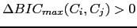 the two clusters are merged into a
single cluster. In this case, the merged cluster is created in the
same way as is created, although it is not a
requirement. The total complexity of the system remains intact
through the merge as the number of Gaussian mixtures representing
the data is the same, clustered in M-1 clusters.
The computation of  BIC for all possible combinations of
clusters is by far the most computationally intensive step in the
agglomerative clustering system. Given that the models are
retrained and the data is resegmented after each merge it obtains
models at each iteration that are quite dissimilar to the models
in the previous iteration, therefore it is recommended to compute
all values again. Some techniques were tested to speedup this
process by looking at the behavior of the
BIC for all possible combinations of
clusters is by far the most computationally intensive step in the
agglomerative clustering system. Given that the models are
retrained and the data is resegmented after each merge it obtains
models at each iteration that are quite dissimilar to the models
in the previous iteration, therefore it is recommended to compute
all values again. Some techniques were tested to speedup this
process by looking at the behavior of the  BIC values. Some
are:
BIC values. Some
are:
user 2008-12-08